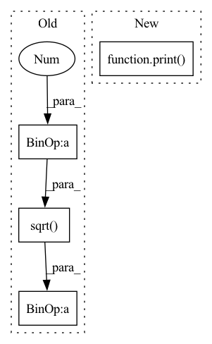

Pattern ID :41135

Before Change
p = Vc @ p
q = Vc @ q.conj()
A = np.diag(Lambda) - p[:, np.newaxis] @ q[:, np.newaxis].conj().T
B = Vc @ np.sqrt(1.0 + 2 * np.arange(N)).reshape(N, 1)
_, _, C = random_SSM(rng, N)
Ab, Bb, Cb = discretize(A, B, C, 1.0 / L)
After Change
Ct = (I - matrix_power(Ab, L)).conj().T @ Cb.ravel()
// b = conv_from_gen(K_gen_DPLR(Lambda, p, q, B, Ct, step=1.0 / L), L)
b = kernel_DPLR(Lambda, p, p, B, Ct, step=1.0 / L, L=L)
print(a, b)
assert np.allclose(a.real, b.real)
// ////// Diagonal Plus Low-Rank RNN.
In pattern: SUPERPATTERN
Frequency: 4
Non-data size: 4
Instances
Fragment ID: 115926425
Project Name: srush/annotated-s4
Commit Name: 19025c3e2db20e5c9ad79a64b32c6d650843a741
Time: 2022-06-05
Author: albertfgu@gmail.com
File Name: s4/s4.py
M Class Name: AnonimousClass
N Class Name: AnonimousClass
M Method Name: test_gen_dplr(2)
N Method Name: test_gen_dplr(2)
M Parent Class:
N Parent Class:
M File Name: s4/s4.py
N File Name: s4/s4.py
M Start Line: 978
M End Line: 993
N Start Line: 978
N End Line: 989
'>
Before Change
Vc = V.conj().T
p = Vc @ p
q = Vc @ q.conj()
B = Vc @ np.sqrt(1. + 2 * np.arange(N)).reshape(N, 1)
Ct = lecun_normal(
dtype=np.complex64 // FAILS if uncomment
)(rng, (1, N))
After Change
K = conv_from_gen(K_gen, L)
K2 = K_conv(Ab, Bb, Cb, L=L)
print("here")
print(K)
print(K2)
assert np.allclose(K.real, K2.real, atol=1e-5, rtol=1e-5)
'>
Fragment ID: 115926410
Project Name: srush/annotated-s4
Commit Name: 9a19f64eaa50a84b2b7c7f45eee2f2cc57c47ed8
Time: 2022-02-25
Author: srush.research@gmail.com
File Name: s4/s4.py
M Class Name: AnonimousClass
N Class Name: AnonimousClass
M Method Name: test_conversion(2)
N Method Name: test_conversion(2)
M Parent Class:
N Parent Class:
M File Name: s4/s4.py
N File Name: s4/s4.py
M Start Line: 958
M End Line: 1008
N Start Line: 972
N End Line: 1029
'>
Before Change
// define the mo layer
self.mo = nn.Linear(mol.norb, mol.norb, bias=False)
mo_coeff = torch.sqrt(torch.tensor([1./2.])) * torch.tensor([[1.,1.],[1.,-1.]])
self.mo.weight = nn.Parameter(mo_coeff.transpose(0,1))
// jastrow
After Change
//mo_coeff = torch.sqrt(torch.tensor([1./2.])) * torch.tensor([[1.,1.],[1.,-1.]])
mo_coeff = torch.tensor(mol.get_mo_coeffs(code=scf)).float()
print(mo_coeff.shape)
self.mo.weight = nn.Parameter(mo_coeff.transpose(0,1))
// jastrow
self.edist = ElectronDistance(2,3)
'>
Fragment ID: 115926419
Project Name: nlesc-jcer/qmctorch
Commit Name: af6545582bc80c2cc9be706d291c67708eed1edf
Time: 2019-07-11
Author: nicolas.gm.renaud@gmail.com
File Name: example/nn_h2_sto.py
M Class Name: STO_H2
N Class Name: STO_H2
M Method Name: __init__(3)
N Method Name: __init__(2)
M Parent Class: NEURAL_WF_BASE
N Parent Class: NEURAL_WF_BASE
M File Name: example/nn_h2_sto.py
N File Name: example/nn_h2_sto.py
M Start Line: 44
M End Line: 44
N Start Line: 27
N End Line: 47
'>
Before Change
i += 1
// coef = Lasso(alpha=current, selection="cyclic", max_iter=10000).fit(X, y).coef_
coef = ElasticNet(alpha=alpha, l1_ratio=l1_ratio, fit_intercept=False).fit(np.sqrt(current + 1) * X,
y / np.sqrt(current + 1)).coef_
current_val = 1 - np.linalg.norm(X @ coef)
current, previous, min_, max_ = bin_search(current, previous, current_val, previous_val, min_, max_)
previous_val = current_val
After Change
converged = True
elif np.abs(max_ - min_) < 1e-30 or i == 50:
converged = True
print("warning: failed to converge")
return coef, current
def lyuponov(self):
views = len(self.datasets)
'>
Fragment ID: 115926421
Project Name: jameschapman19/cca_zoo
Commit Name: dd480e267376da9626d2fb1ae97dc1301f06443f
Time: 2020-11-03
Author: james.chapman.19@ucl.ac.uk
File Name: cca_zoo/alternating_least_squares.py
M Class Name: ALS_inner_loop
N Class Name: ALS_inner_loop
M Method Name: constrained_elastic(6)
N Method Name: constrained_elastic(6)
M Parent Class:
N Parent Class:
M File Name: cca_zoo/alternating_least_squares.py
N File Name: cca_zoo/alternating_least_squares.py
M Start Line: 364
M End Line: 387
N Start Line: 336
N End Line: 355